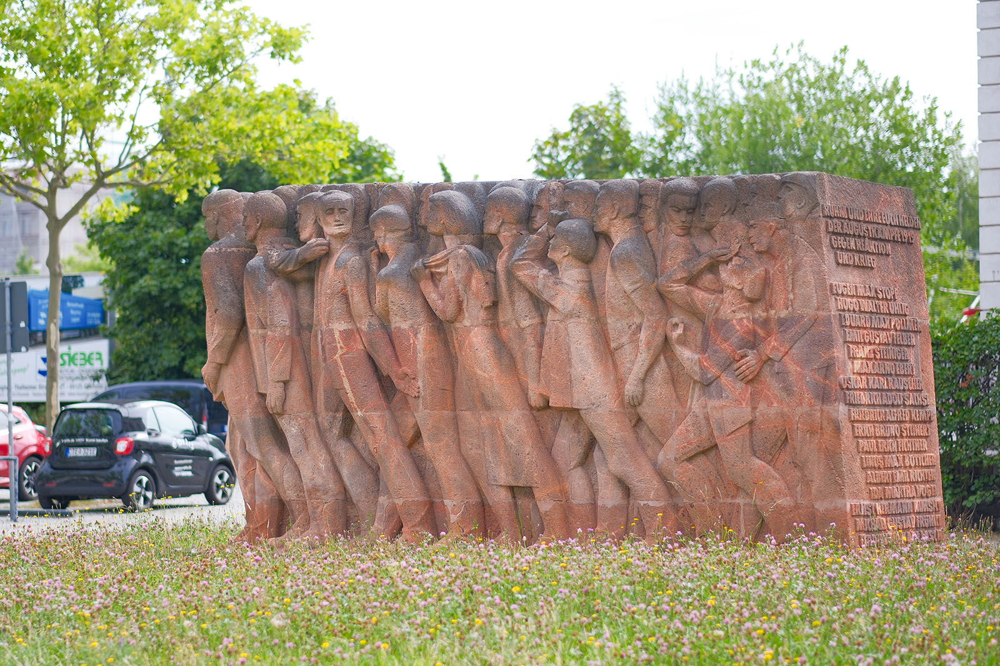
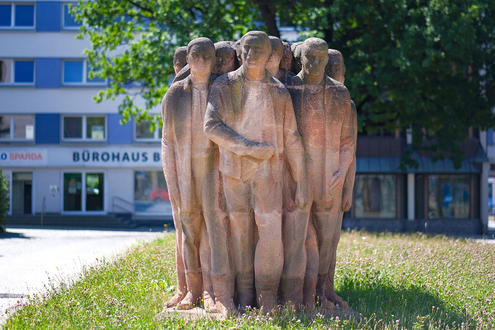
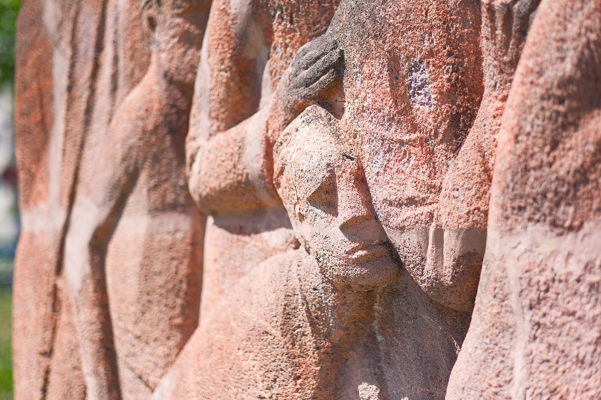
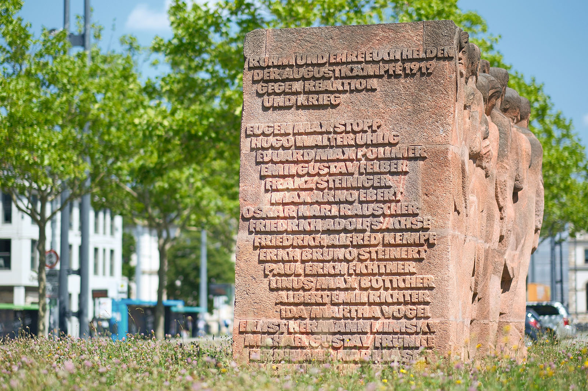
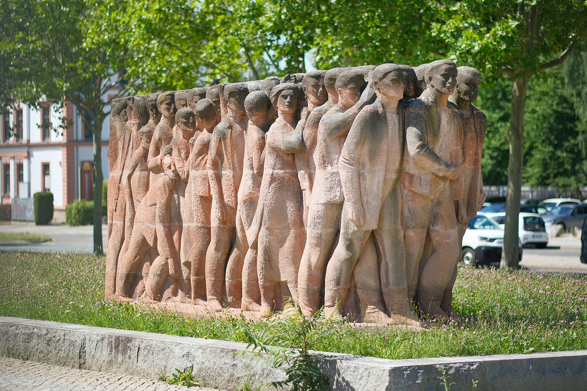

Recherche und Werkbeschreibung: Roman Pilz. Fotografien: Frank Krüger. Text und Bild wechseln sich wie in einem Magazin ab. Ein Klick auf ein Bild öffnet die Großansicht.
Das Denkmal "Augustkämpfer" erinnert an die Ereignisse am und um den 8. August 1919, der als "Blutiger Freitag" in die Geschichte der Stadt Chemnitz einging. In der von Existenznot und politischen Kämpfen geprägten Zeit nach der Niederlage des Deutschen Kaiserreichs im 1. Weltkrieg kam es bei gewaltsamen Zusammenstößen von organisierten Arbeitern und der Reichswehr zu 36 Toten, davon 22 Soldaten und 14 Zivilisten. Über 100 Personen wurden verletzt. Bereits an den Vortagen und später kam es, angestachelt von antisemitischer und rechter Agitation, zu weiteren Zwischenfällen und Opfern.
Der Künstler Hanns Diettrich engagierte sich in der Nachkriegszeit in besonderem Maße für die Erinnerung an die Kämpfe der frühen Arbeiterbewegung und deren Opfer in der Zeit des Faschismus. Von ihm stammt auch das Mahnmal der Vereinigung der Verfolgten des Naziregimes (VVN) im heutigen Park der Opfer des Faschismus.
Bereits Anfang der 1960er Jahre wurde er mit der Ausarbeitung eines "Augustkämpferdenkmals" betraut. In seiner Arbeit mit den Planungsgremien erhielt er dabei auch vom Zeitzeugen und früheren Bürgermeister der Stadt, Max Müller, Eindrücke aus erster Hand. Warum das Denkmal nicht schon am feierlich gewürdigten 50. Jahrestag 1969 eingeweiht werden konnte, ist nicht überliefert. Erst 1977, am 58. Jahrestag des Ereignisses, wurde das monumentale Denkmal am Bahnhofsvorplatz errichtet.
Das wie ein einheitlicher Block aus rötlichem Rochlitzer Porphyr geschaffene Werk ist an allen vier Seiten wie ein Relief ausgearbeitet. Es besteht tatsächlich aus 65 Einzelsteinen, die in Dresdner Werkstätten von Steinbildhauern nach dem Modell in Originalgröße von Hanns Diettrich geformt wurden. Die Steine sind um einen inneren Kern wie ein dichtes Mauerwerk zusammengefügt. Die hellen Fugen sind stellenweise bewusst sichtbar gestaltet, um den expressiven Farbkontrast des Natursteins und des verbindenden Elements herauszustellen.

Der über 5 Meter lange Zug von dicht nach vorne drängenden Menschen besteht hauptsächlich aus jungen und älteren Männern, aber auch einzelne Frauen sind zu sehen. Direkt von der Arbeit kommend, so wie 1919, als sich die Arbeiter der großen Fabriken um 14 Uhr zur Ansprache vor dem Opernhaus einfinden sollten, drängen die Massen mit Schiebermützen, in Stiefeln, Arbeitsjacken, Mänteln und Schürzen vorwärts.
An der Spitze des Zuges steht ein schreitender Mann mit geschlossenen Fäusten. Er wird links und rechts von zwei ebenso entschlossen wirkenden Männern flankiert. Die Beine und Füße der Nachfolgenden kreuzen und überschreien schon ihre Vordermänner. Die Bewegung scheint koordiniert, aber unaufhaltsam.
Während die Figuren vorne fast vollplastisch wirken, sind die Menschenmassen an den Seiten mehr wie ein Relief ausgebildet. Oben zwischen den Köpfen und unten zwischen den Füßen ist das Innere des dichten Trosses zu erahnen, aber nur die Figuren am Rande sind kantig und voller Pathos charakterisiert.

Der Künstler will uns den Moment vor der Gewalt zeigen, auf Seiten der unbewaffneten Arbeiter. Doch eine der hinteren, seitlichen Figuren ist schon im Sturz begriffen. Sie wird von hinten gehalten, ist aber vielleicht das erste Opfer der Schüsse aus unsichtbaren Soldatengewehren.
Der Zusammenhalt der Einzelnen wird auch durch Figuren unterstrichen, die sich nach hinten umblicken, um den Anderen zu suchen oder nach vorne zu weisen. Einzelne Hände gehen nach oben und geben der entschlossenen Wut Ausdruck, doch die Münder der vielen Menschen bleiben meist ernst und geschlossen – keine Zeichen von irrationaler Rasserei oder chaotischem Geschrei sollen die Erinnerung an die Toten verwirren.

Auf der Rückseite ist neben dem ehrenden Mahnspruch die Liste aller Todesopfer auf Seiten der Zivilbevölkerung zu sehen: Insgesamt 18 Namen aus der Chemnitzer Bevölkerung sind hier übereinander in den Stein gehauen. Es sind wohl die 14 Opfer der blutigen Kämpfe am Nachmittag des 8. und weitere aus der Zeit vor und nach dem Tag. Vollkommen aufgeklärt wurde das Geschehen nie. Die meisten der Toten wurden, nach einem von tausenden Menschen begleiteten Trauerzug, am 13. August auf dem Reichenheiner Friedhof begraben.
Das Denkmal war ursprünglich dichter an der Bahnhofstraße und der Carolastraße, von wo die Massen sicherlich ihren Weg zum Bahnhof nahmen, positioniert. Die Figuren blickten von 1977 bis 2002 Richtung Zentrum die Bahnhofstraße hinab. Nach einer Neugestaltung des Vorplatzes wurde die Orientierung der Plastik geändert. Nun blicken die Kämpfer Richtung Bahnhof, wo 1919 die Truppen der Reichswehr eintrafen und sich formierten.

